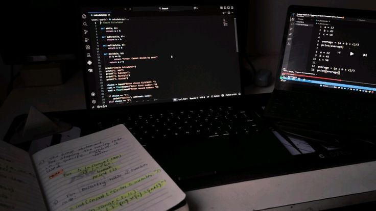
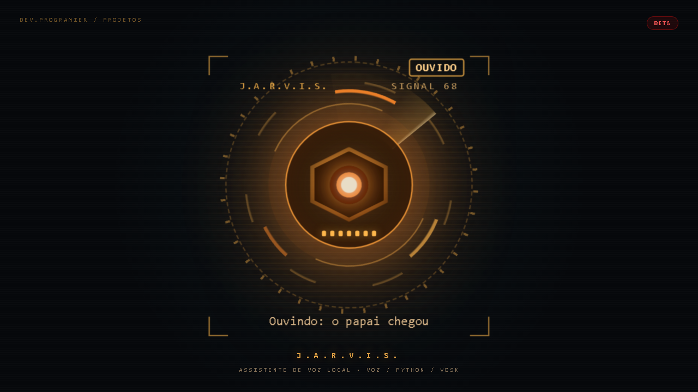
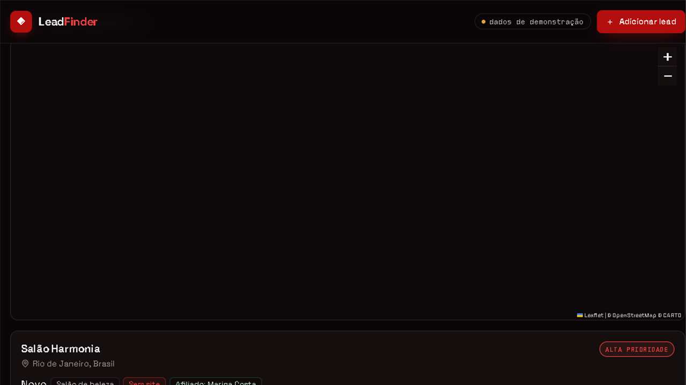

Olá, mundo. Meu nome é
Ryan Samuel Araújo dos Santos
Estudante de programação em constante evolução. Estudo desenvolvimento full-stack, Python, criação de jogos com Godot Engine e inteligência artificial.
01 / sobre
Sobre mim

Sou estudante de programação e estou aprendendo a desenvolver software. Meu foco atual é construir uma base sólida em lógica de programação e nas tecnologias que uso no dia a dia do desenvolvimento.
Quero apresentar minha evolução como desenvolvedor de forma honesta: cada projeto e cada estudo aqui representam uma etapa real do meu aprendizado — sem atalhos e sem experiências inventadas.
Meu objetivo é crescer na área de tecnologia, evoluir constantemente e trabalhar com projetos que unam programação, criatividade e inteligência artificial.
02 / tecnologias
Tecnologias
Frameworks
Nenhum framework confirmado ainda. Esta lista será atualizada conforme eu avançar no desenvolvimento full-stack.
Ferramentas
Lista em construção. As ferramentas que eu utilizar serão adicionadas aqui.
Engines
Em aprendizado
Sem porcentagens nem rótulos de "avançado": apenas o que estou estudando de verdade.
03 / projetos
Projetos

J.A.R.V.I.S.
BetaAssistente de voz local com holograma compacto: reconhece português com Vosk, responde com a voz do Windows e conversa sem API, chave ou serviço externo. Versão beta, em desenvolvimento ativo.
Imagem em breve
RPG
A definirProjeto reservado. Descrição, tecnologias e resultados serão apresentados aqui assim que houver informações confirmadas.
Ver repositório
LeadFinder
No arFerramenta de prospecção de estabelecimentos brasileiros sem site detectado: filtros, status de prospecção, contatos prontos (WhatsApp, e-mail e Instagram), mapa interativo e exportação CSV. Cada lead registra a fonte pública de onde veio.
Projeto de DEV.programier
Abrir ferramenta04 / estudos
Estudos
Cursos
-
Em andamento
Curso de Frontend
EBAC
O que estou aprendendo
- Desenvolvimento Full-Stack
- Python
- HTML, CSS e JavaScript
- Godot Engine e desenvolvimento de jogos
- Inteligência Artificial
Objetivos de estudo
Construir uma base sólida em programação, aprender a criar aplicações full-stack completas, desenvolver jogos com Godot e explorar aplicações de inteligência artificial no desenvolvimento.
Evolução e conquistas
Espaço reservado para registrar marcos e conquistas conforme eu avançar nos estudos.
05 / contato
Contato
Se você quer conversar sobre projetos, oportunidades ou trocar ideias sobre tecnologia, entre em contato pelos canais abaixo.